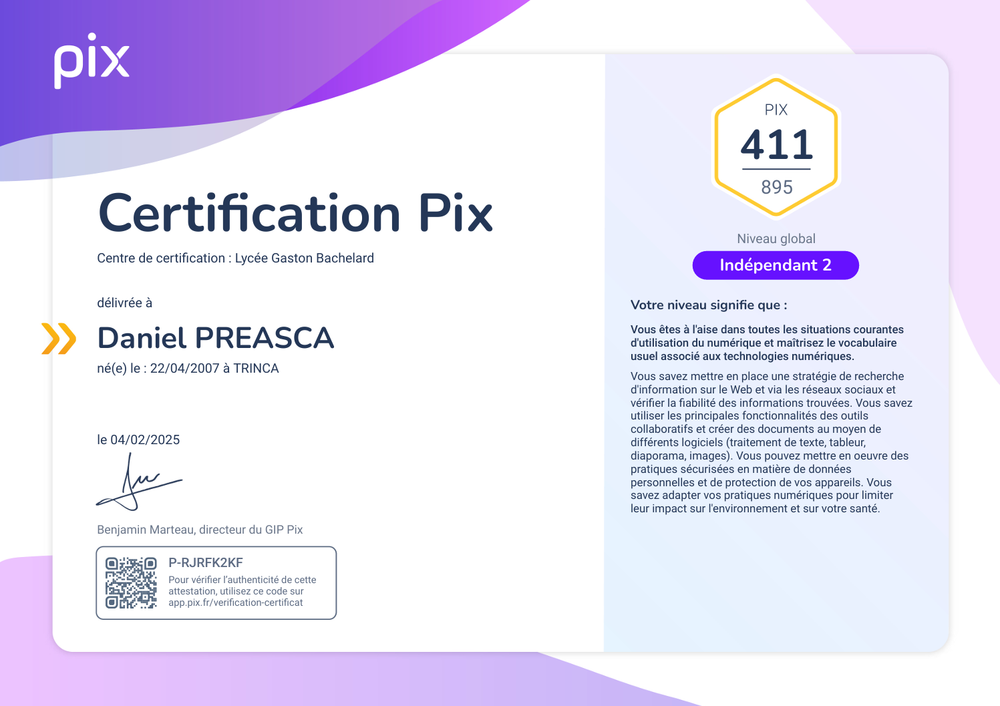
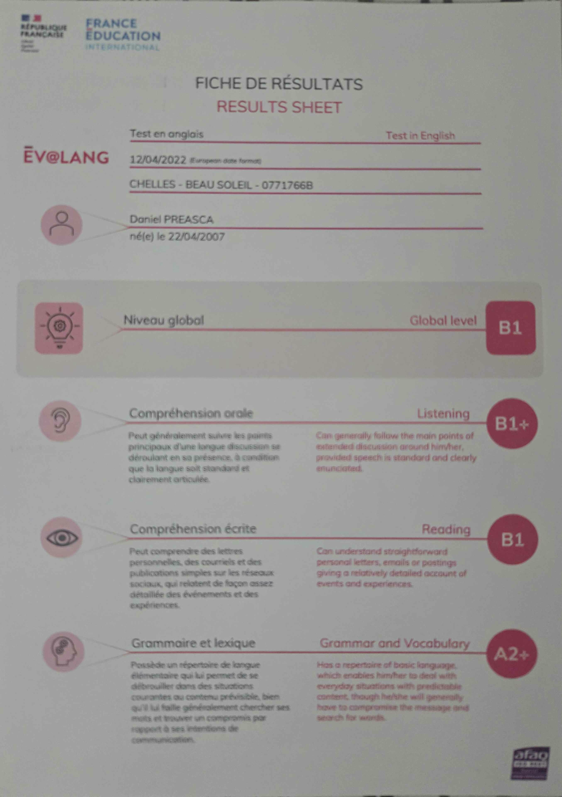
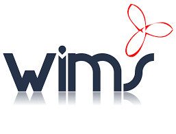

Pourquoi ce portfolio ?
Ce portfolio met en avant mon parcours, mes compétences, mes projets et mes objectifs professionnels dans les domaines du développement informatique et du web.
Me connaître
Étudiant en BUT Informatique, passionné par le développement et les systèmes. J’aime comprendre comment les choses fonctionnent, apprendre en expérimentant et créer des projets qui ont du sens.
Suivre ma progression
Ce portfolio me permet de visualiser mon évolution : mes réussites, mes erreurs, mes améliorations. Il centralise mes projets, mes compétences et mes objectifs, pour mesurer mon parcours.
Parcours
BUT Informatique
Étudiant à l’Université Gustave Eiffel
STI2D - SIN
Élève au lycée Gustave Eiffel
Collège
Élève au collège Beau Soleil
Formations
BUT Informatique
Université Gustave Eiffel – IUT de Marne-la-Vallée
2025 – Aujourd’hui
Formation axée sur le développement, les systèmes et réseaux.
Baccalauréat STI2D – Option SIN
Lycée Gaston Bachelard de Chelles
2022 – 2025
Approche technologique orientée systèmes numériques, réseaux et électronique.
Brevet des collèges
Collège Beau Soleil de Chelles
2018 – 2022
Certifications
PIX
Certification des compétences numériques.
Niveau : Intermédiaire 2

Evalang (collège)
Évaluation officielle du niveau d’anglais réalisée en 3ᵉ.
Niveau obtenu : B1

Compétences
Développement
- HTML / CSS
- JavaScript
- Java / Javafx
- Python
- SQL (PostgreSQL, MySQL)
Outils
- VS Code
- Eclipse
- Scene Builder
- Git / GitHub
- pgAdmin
- Wireshark
- Looping
Environnements
- Linux (Arch + Hyprland)
- Windows
- Virtualisation (VirtualBox)
Méthodologies
- Gestion de projet
- Travail en équipe
Soft Skills
- Autonomie
- Rigueur
- Communication
- Curiosité technique
Projets
Quelques exemples de travaux illustrant mes compétences.

Portfolio web
Site web développé en HTML/CSS/JS pour présenter mon parcours et mes projets.
HTML, CSS, JavaScript


Conception d'une BDD
Conception et implémentation d’une base de données MySQL complète.
SQL (MySQL), Looping

Nikkoshi Pearls
Projet visant à mettre en valeur le patrimoine culturel UNESCO des Temples et Sanctuaires de Nikko au Japon.
HTML5, CSS3, JavaScript

Wims Programs
Projet personnel visant à réduire le temps de calcul des exercices WIMS en automatisant certaines opérations grâce à des scripts Python.
Python
Conseil des Schtroumpfs
Jeu de gestion de ressources basé sur des choix stratégiques, avec pour objectif de survivre 12 mois dans un environnement évolutif.
Java, Javafx
Contact
Pour échanger sur mes projets ou une opportunité, contactez-moi.